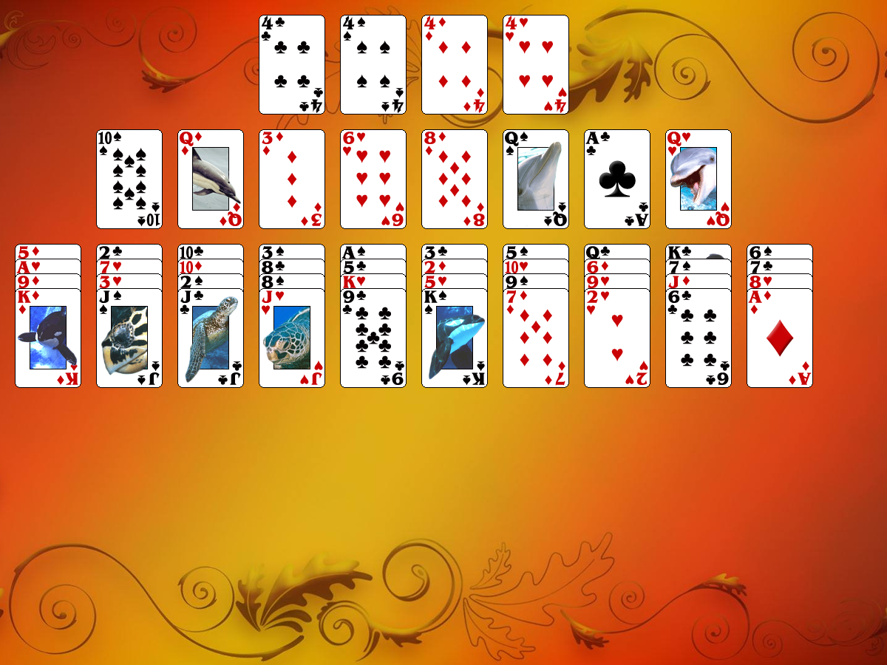

This solitaire uses 52 cards (1 deck).
The first card dealt to the foundations is the starter card for all the foundations. The three other cards of the same rank are automatically played to the remaining foundations during the deal.
40 cards are dealt into 10 tableau piles (4 cards per pile). Eight cells (reserves) are placed above the tableau piles. At the start of the game 1 card is dealt to each cell.
The object of the game is: To build the foundations up in suit until each pile contains thirteen cards.
The rules:The top cards of tableau piles and cards from cells are available to play. You may build tableau piles down in suit. Only one card at a time can be moved. The top card of any tableau pile can also be moved to any cell. Each cell may contain only one card. Cards in the cells can be moved to the foundation piles or back to the tableau piles, if possible.
